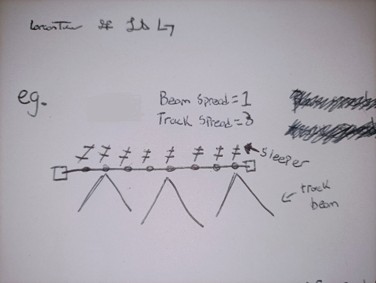
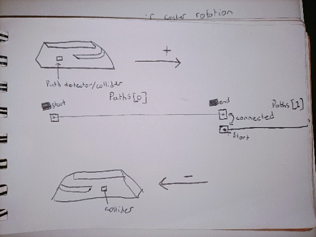
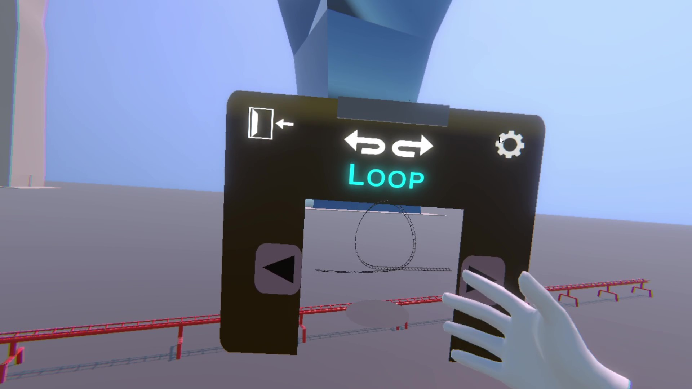
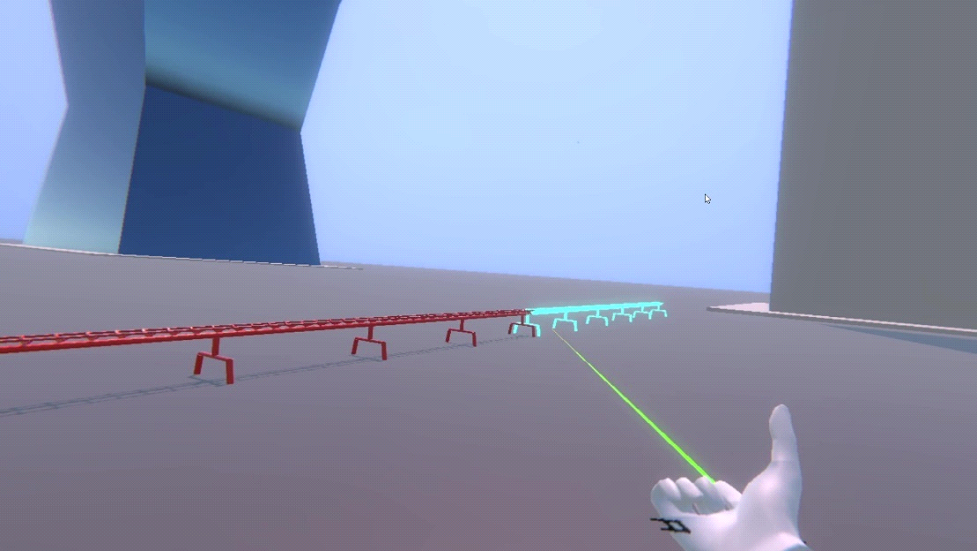
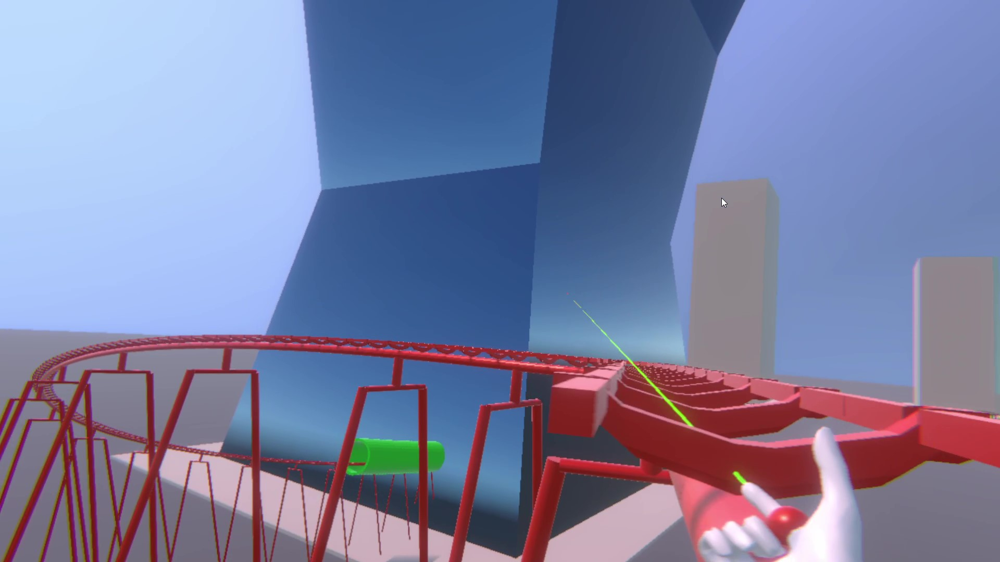
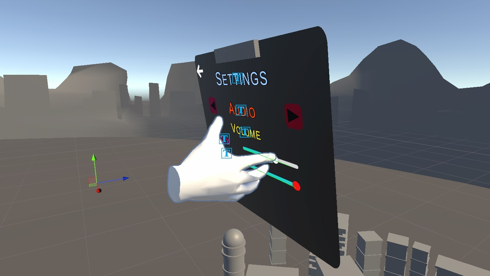
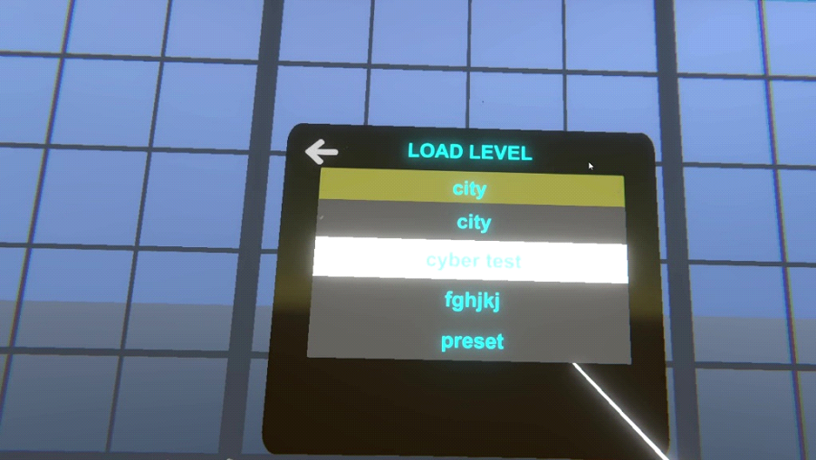
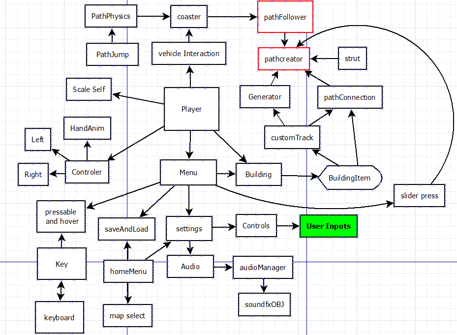

Unity XR Rollercoaster Builder (Project 4)
Description:
For our Final Year Project I really wanted to create a game in VR. In my extensive use of VR I noticed there are so many rollercoaster experience 360 videos and very fiew games. So I thought it would be a good idea to create a building game. A big problem with the 360 videos is the lack of motion parallex. A game would fix this. I also thought it would be fun for a user to expereince their own creation.
I used the Bezier Spline developed by Sebastian Lague as the only packages used to create this project. I have used the spline in previous projects and found that I love it and its vercitility. The only limitations is there is only one path follower (path following object) per path creator (path) and one path creator per path follower.
Tracks

Generator
I created a strut in blender. When my coaster generator script is run a loop is run along the points in the path plus the offset value so every couple of points a strut is instantiated in the position and rotation of the point the index of a point is. This makes building the tracks more feasible as they generate themselves. I’ve also added support beams that generate themselves. To reduce the amount of load, I attempted a mesh combine. The implementation of this wasn’t working and Unfortuanly was taking longer than I could afford.
Track Tiles
The player/coaster object stores a list of tracks to follow. When it hits the start of a rail traveling in the positive direction, the track index will be set to the track it has collided with, in turn updating the PathFollower’s PathCreator. These track tiles can also detect the distance they are form other tracks meaning when they are within a certain distance of other tracks end point, the start point with click into place. The pathfollower also knows the distance along the path it is as well as what the next and previous is. This allows the coaster to stop when the ride is finished.
Building
Prefabs
My initial idea was to have track pieces that you could pull out of a menu and click into place. It bacame clear in developmenmt that this was not going to work as growing and shrinking would mean holding a massive or tiney piece. I decided intead to have prop versions of the track in the menu that when grabbed are used to place an associated track piece when the user points and clicks.
 Custom track
I wanted to have a track piece that the user could pull and strech like an accordian.
I used the spline and updated the position and angle of the spline depending on the players position relative to the start point.
Then I used the genrator to destroy and regenerate the tracks as the path was being updated.
The biggest challange with this was ensureing the end of the track was flat to facilitate the next track pieces.

Tunnels
To make holes in obsticals I used a simple shader technique. The idea was to have a mesh inside the hole that renders nothing. I then used the render order to draw the obsticle, then the depth mask "nothing object" and then everything else ontop of that. It was then a matter of intergrating that into the generator. This saves me from cutting up a mesh and saves performance as it gives the gpu less to render rather than more polygons as a result of cutting up a mesh.
UI
To give the user multiple choices in how they would most comfortably use the system, I decided to give the UI pressable button as well as the ability to point and click using colliders.
I called them pressables.
I then used the pressable to create this VR.
keyboard. click here to watch
To give the users even more choice I gave them the ability to choose their inputs and how they want to use the system.
It was importent that the menu followed the player but wasnt stuck to their face like a zenomorph allthogh that would be a great horror game.

Serialization
 To save the track data I wrote out the rotations and positions of each point to a binary file based on the name of the save file they create using the VR keyboard. Unity has an amazing static string value that give us a persistant path on any machine you build to. it was then a matter of writing directory code. Ie. Directory.delete(peristantPath + "/levelName,map") or Directory.create(peristantPath + "/levelName,map") if exists ect. When loading up the level I had to set the rotations and positions of these path points and regenerate the struts. I used the name of the save file to hold the map name the player made the track in. I then parse what the player called the level based on a comma to seperate the name of the level from the map it was made in.
Archetecture
I find its best to keep things simple until they get complicted. Classes and Objects relate to eachother based on the components they have and share. I also converted the XR inputs to a globle class for easier implementation.
Custom Track Dev vlog
Conclusion
This project is my most favourate project I've ever developed. Being able to jump in and out of a world of your own creation and having an idea turn into a reality make VR development umbelievably appealing to me. Since this is what a 100 hour project of one guy looks like, I'd be very excited to see what a team of developers can accomplish.